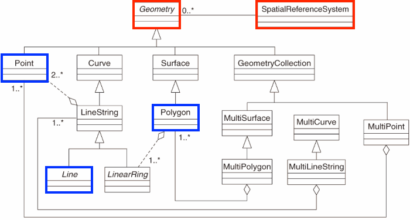

1 Foundations
1.1 Goals and Outcomes
- Understand fundamental spatial data structures and libraries in R.
- Become familiar with coordinate reference systems.
- Perform some fundamental spatial operations in R.
- Geographic I/O
We’ll start by installing and loading some of the primary libraries for working with spatial data in R and examining spatial data structures in R.
1.2 Why R for Spatial Analysis
- R is:
- lightweight
- open-source
- cross-platform
- Works with contributed packages - currently 19897
- provides extensibility
- Automation and recording of workflow
- provides reproducibility
- Optimized work flow - data manipulation, analysis and visualization all in one place
- provides integration
- R does not alter underlying data - manipulation and visualization in memory
- R is great for repetitive graphics
- R is great for integrating different aspects of analysis - spatial and statistical analysis in one environment
- again, integration
- Leverage statistical power of R (i.e. modeling spatial data, data visualization, statistical exploration)
- Can handle vector and raster data, as well as work with spatial databases and pretty much any data format spatial data comes in
- R’s GIS capabilities growing rapidly right now - new packages added monthly - currently about 275 spatial packages (depending on how you categorize)
Some drawbacks to using R for GIS work
- R not as good for interactive use as desktop GIS applications like ArcGIS or QGIS (i.e. editing features, panning, zooming, and analysis on selected subsets of features)
- Explicit coordinate system handling by the user
- no on-the-fly projection support
- In memory analysis does not scale well with large GIS vector and tabular data
- Steep learning curve
- Up to you to find packages to do what you need - help not always great
Code
library(cranlogs, quietly = T)
library(ggplot2, quietly = T)
library(lubridate, quietly = T)
library(dplyr, quietly = T)
stats <- cran_downloads(from = "2013-01-01", to = "2023-10-01", package = c("sf", "terra", "stars", "raster", "sp"))
monthly_stats <- stats |>
group_by(month=floor_date(date, "month"), package) |>
summarize(amount=sum(count))
ggplot(monthly_stats, aes(x=month, y=amount, group = package, colour = package)) + geom_line(linewidth=1) + scale_colour_brewer(palette="Set1") + ggtitle("R Spatial Package \n Downloads since 2013") + theme_minimal() + xlab('Year') + ylab('Downloads')
1.3 Spatial Data Structures in R
A few core libraries underpin spatial libraries in R (and Python!) and in GIS software applications such as QGIS and ArcPro. Spatial data structures across languages and applications are primarily organized through OSgeo and OGC). These core libraries include:
- GDAL –> For raster and feature abstraction and process
- PROJ –> A library for coordinate transformations and projections
- GEOS –> A Planar geometry engine for operations (measures, relations) such as calculating buffers and centroids on data with a projected CRS
- S2 –> a spherical geometry engine written in C++ developed by Google and adapted in R with the s2 package
1.3.1 Background on data structures
- from R user group 2021
1.3.2 Simple features and geospatial grids
*Vector data are comprised of points, lines, and polygons that represent discrete spatial entities, such as a river, watershed, or stream gauge.
Raster data divides spaces into rectilinear cells (pixels) to represent spatially continuous phenomena, such as elevation or the weather. The cell size (or resolution) defines the fidelity of the data.

1.3.3 Vector Data Model
For Vector data, Simple Features (officially Simple Feature Access) is both an OGC and International Organization for Standardization (ISO) standard that specifies how (mostly) two-dimensional geometries can represent and describe objects in the real world. The Simple Features specification includes:
- a class hierarchy
- a set of operations
- binary and text encodings
It describes how such objects can be stored in and retrieved from databases, and which geometrical operations should be defined for them.
It outlines how the spatial elements of POINTS (XY locations with a specific coordinate reference system) extend to LINES, POLYGONS and GEOMETRYCOLLECTION(s).
The “simple” adjective also refers to the fact that the line or polygon geometries are represented by sequences of points connected with straight lines that do not self-intersect.

1.3.3.1 Simple and valid geometries and ring direction
This breakdown of simple features follows for the most part this section in Spatial Data Science For linestrings to be considered simple they must not self-intersect:
library(sf)
(ls <- st_linestring(rbind(c(0,0), c(1,1), c(2,2), c(0,2), c(1,1), c(2,0))))
#> is_simple
#> FALSEFor polygons several other conditions have to be met to be simple:
- polygon rings are closed (the last point equals the first)
- polygon holes (inner rings) are inside their exterior ring
- polygon inner rings maximally touch the exterior ring in single points, not over a line
- a polygon ring does not repeat its own path
- in a multi-polygon, an external ring maximally touches another exterior ring in single points, not over a line
z and m coordinates As well as having the necessary X and Y coordinates, single point (vertex) simple features can have:
- a Z coordinate, denoting altitude, and/or
- an M value, denoting some “measure”
Text and binary encodings A key part of the standard feature encoding is text and binary encodings. The well-known text (WKT) encoding we have shown above gives us a human-readable description of the geometry. The well-known binary (WKB) encoding is machine-readable, lossless, and faster to work with than text encoding. WKB is used for all interactions with GDAL and GEOS.
Operations on geometries We can break down operations on geometries for vector features in the following way:
- predicates: a logical asserting a certain property is
TRUE - measures: a quantity (a numeric value, possibly with measurement unit)
- transformations: newly generated geometries
We can look at these operations by what they operate on, whether the are single geometries, pairs, or sets of geometries:
- unary when it’s a single geometry
- binary when it’s pairs of geometries
- n-ary when it’s sets of geometries
Unary predicates work to describe a property of a geometry.
A list of unary predicates:
| predicate | meaning |
|---|---|
is |
Tests if geometry belongs to a particular class |
is_simple |
Tests whether geometry is simple |
is_valid |
Test whether geometry is valid |
is_empty |
Tests if geometry is empty |
A list of binary predicates is:
| predicate | meaning | inverse of |
|---|---|---|
contains |
None of the points of A are outside B | within |
contains_properly |
A contains B and B has no points in common with the boundary of A | |
covers |
No points of B lie in the exterior of A | covered_by |
covered_by |
Inverse of covers |
|
crosses |
A and B have some but not all interior points in common | |
disjoint |
A and B have no points in common | intersects |
equals |
A and B are topologically equal: node order or number of nodes may differ; identical to A contains B and A within B | |
equals_exact |
A and B are geometrically equal, and have identical node order | |
intersects |
A and B are not disjoint | disjoint |
is_within_distance |
A is closer to B than a given distance | |
within |
None of the points of B are outside A | contains |
touches |
A and B have at least one boundary point in common, but no interior points | |
overlaps |
A and B have some points in common; the dimension of these is identical to that of A and B | |
relate |
Given a mask pattern, return whether A and B adhere to this pattern |
See the Geometries chapter of Spatial Data Science for a full treatment that also covers **unary and binary measures* as well as unary, binary and n-ary transformers
plot(iris)